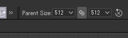

SubstanceDesigner
SubstanceDesigner PythonAPI大解読
SDSBSCompGraph：#2
2024/03/12
今回も、引き続き SDSBSCompGraph クラスのメソッドについて調べていきます。
実行環境
- SubstanceDesignerバージョン：13.1.1
- PythonAPIバージョン：13.0.0
getDefaultParentSize
getDefaultParentSize () → sd.api.sbbasetype.int2
グラフのペアレントサイズを取得するメソッドです。
import sd
ctx = sd.getContext()
app = ctx.getSDApplication()
uiMgr = app.getQtForPythonUIMgr()
c_graph = uiMgr.getCurrentGraph()
print(c_graph.getDefaultParentSize())
# >> x: 1024, y: 1024「デフォルト」という用語に少し引っかかりましたが、ツールバーからペアレントサイズを変更して検証したところ、戻り値も同期していたので安心しました。

あくまで、ノードのインスタンスパラメータと差別化するためにデフォルトと呼んでいるということなのでしょうね。
テクスチャを書き出すときの解像度の設定などに応用できそうです。
(Python組み込み型の int ではないので、取り扱い注意です。)
getExposedInSBSAR
getExposedInSBSAR () → bool
パッケージを書き出す時に、SBSARファイルにグラフを書き出し対象として設定するかどうかのフラグを取得できます。
グラフのアトリビュートから設定可能です。▼
getGraphType
getGraphType () → str
グラフタイプを取得するメソッドです。
グラフのアトリビュートから設定が可能です。▼
各グラフタイプに設定した時の、戻り値についても調査してみました。
# Type Return
# =============================================
# Unspecified : ""
# Standard material : "material"
# Decal material : "decal material"
# Atlas material : "atlas material"
# Environment light : "light"
# Light texture : "light texture"
# Filter : "filter"
# Mesh based generator : "mesh based_generator"
# Texture generator : "texture_generator"getIcon
getIcon ()
リファレンスによると、グラフのアイコンを取得するメソッドのようです。
アイコンは、グラフのアトリビュートから設定が可能です。▼
リファレンスには、戻り値の型が明示されていなかったので調査したところ、何もアイコンを設定していない場合は None 型が返ってきました。
アイコンが設定されている場合は、sd.api.sdtexture.SDTexture クラスのオブジェクトが返ってきます。
getInputIdentifiers
getInputIdentifiers ()
リファレンスによると、グラフのインプットのIDのリストを取得するメソッドとのことです。
戻り値の型はリファレンスには明示されていませんでしたが、ソースコードを読んでみると、しっかりと型アノテーションが書かれていました。
def getInputIdentifiers(self) -> SDArray[SDValueString]:
"""
Get the list of graph input identifiers.
"""
下記の状態で検証してみたところ、リストの戻り値のサイズは 3 でした。
どうやら、インプットノードで追加したものは取得できるものの、グラフのアトリビュートから追加したものは取得できないようです。（ナゼ…？）
これは曲者すぎます。。いずれソースコードをしっかり読んでみるのがいいかもしれません。
getOutputIdentifiers
getOutputIdentifiers ()
アウトプットのIDのリストを取得するメソッドです。
検証してみたところ、想定通りの出力結果となりました。
c_graph = uiMgr.getCurrentGraph()
ids = c_graph.getOutputIdentifiers()
print(type(ids[0]))
# >> class 'sd.api.sdvaluestring.SDValueString'
for i in ids:
print(i.get())
# >>
# basecolor
# normal
# roughness
# metallic
# height
# ambientocclusionまとめ
今回も SDSBSCompGraph クラスのメソッドについて調べてみました。
やはり、リファレンスだけでは読み取れないデータの仕様は、地道に調べていかないと分かりませんね。。
こういう情報を資産として残しておくのって大事ですよね。開発に困ったときに大いに役立ちます。